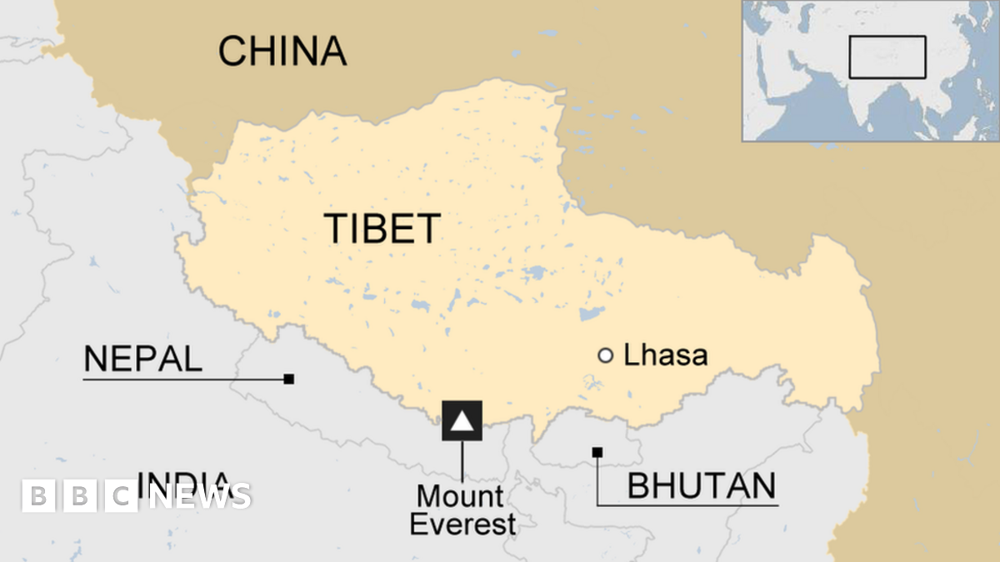

Tibet: The Roof of the World
Tibet, often called the "Roof of the World," is a region known for its high-altitude landscapes, rich history, and deep spiritual traditions. It is one of the most intriguing places on Earth, attracting travelers seeking adventure, spirituality, and breathtaking natural beauty.
Brief History of Tibet
Tibet's history spans thousands of years, shaped by Buddhism, monarchy, and cultural evolution. Here are some key historical moments:
-
🏰 7th Century: Tibetan Empire and the Introduction of Buddhism
King Songtsen Gampo established Tibet as a powerful kingdom and introduced Buddhism, which has since shaped its religious and cultural identity.
-
⚔️ 13th Century: Influence of the Mongol Empire
Tibet became a vassal of the Mongol Empire, which led to the integration of political and religious rule under the Dalai Lamas.
-
🛕 17th Century: Dalai Lama Leadership Established
The 5th Dalai Lama centralized Tibet’s governance, establishing Lhasa as its religious and administrative capital.
-
🌍 20th Century: Modern Developments and Political Changes
The 20th century brought political shifts, with Tibet experiencing significant changes in governance and cultural preservation.